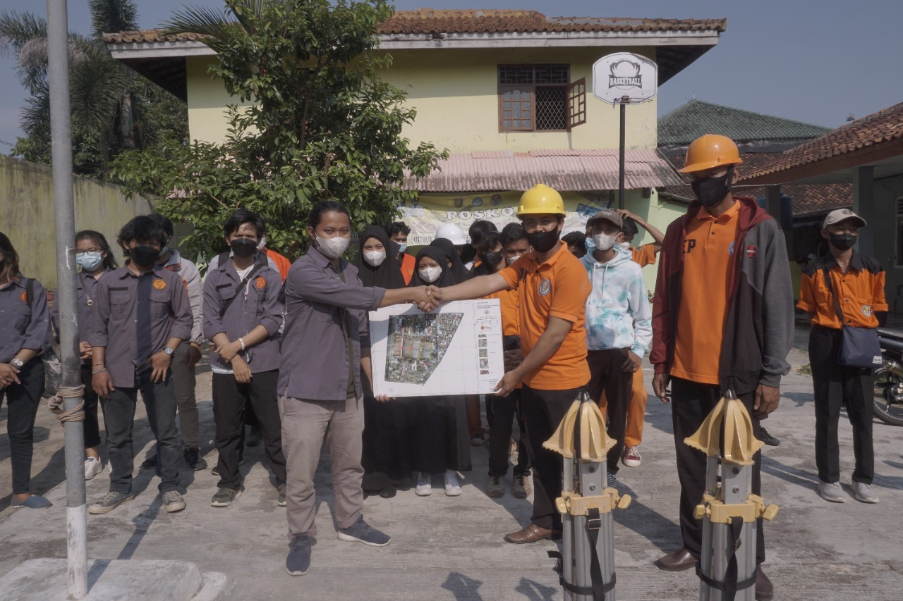
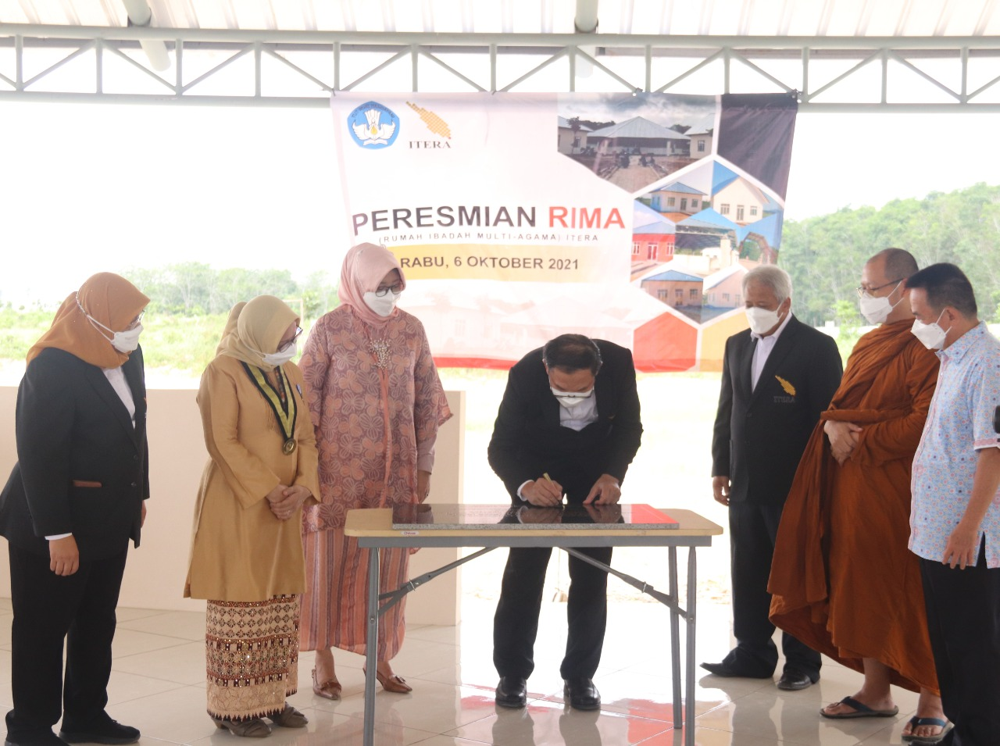
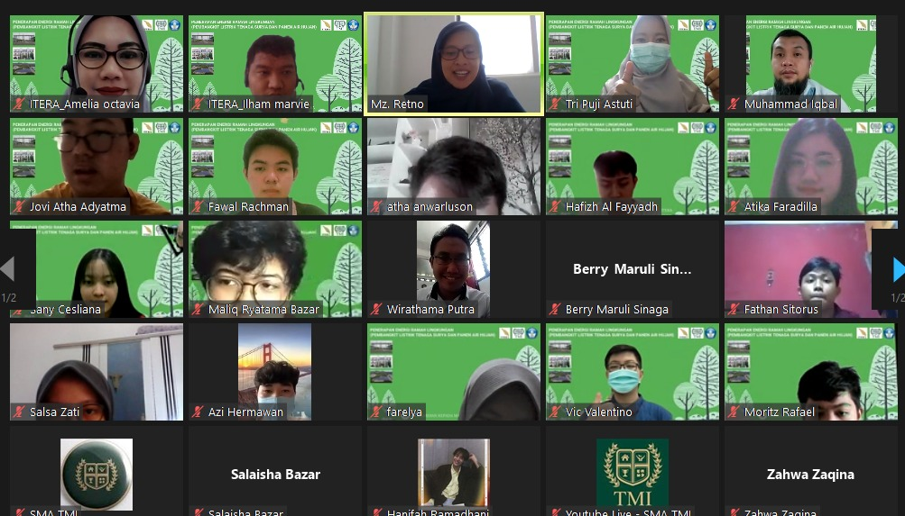

Profil Diri
| DATA DIRI | KETERANGAN | FOTO |
| Nama Lengkap | Juliawati Hutagaol |  |
| Tempat Tanggal Lahir | Bogor,22 Juli 2001 | |
| Alamat | Way Huwi,Lampung Selatan | |
| Pekerjaan | Mahasiswa | |
| Agama | Kristen Protestan | |
| Jenis Kelamin | Perempuan | |
| juliawati.119140016@student.itera.ac.id | ||
BERITA ITERA

Mahasiswa Geomatika ITERA Beri Pelatihan Drone Pada Siswa SMK
ITERA NEWS. Himpunan Mahasiswa Geomatika Insitut Teknologi Sumatera (HMG ITERA) melalui kegiatan Geomatics Goes To
SELENGKAPNYA »
Rumah Ibadah Multiagama ITERA Simbol Toleransi di Kampus
ITERA NEWS. Rumah Ibadah Multiagama (Rima) Institut Teknologi Sumatera (ITERA) telah diresmikan bertepatan dengan Dies
SELENGKAPNYA »
Dosen ITERA Sosialisasi Energi Ramah Lingkungan di SMA Tunas Mekar Indonesia
ITERA NEWS. Tim dosen Institut Teknologi Sumatera (ITERA) mengadakan sosialisasi tentang penerapan energi ramah lingkungan kepada pelajar SMA Tunas Mekar Indonesia
SELENGKAPNYA »Untuk berita lainnya bisa di cek DISINI